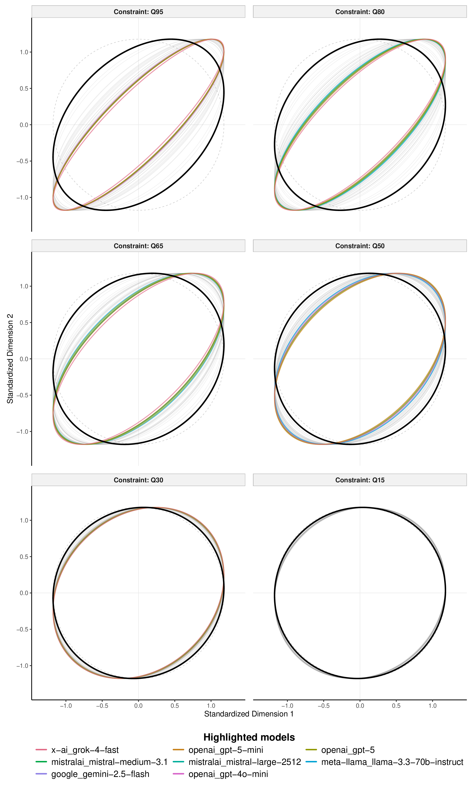
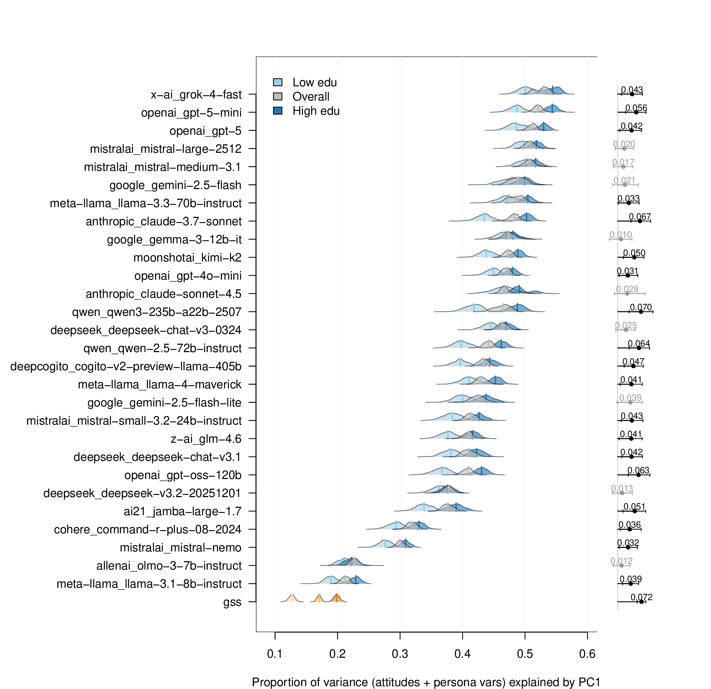
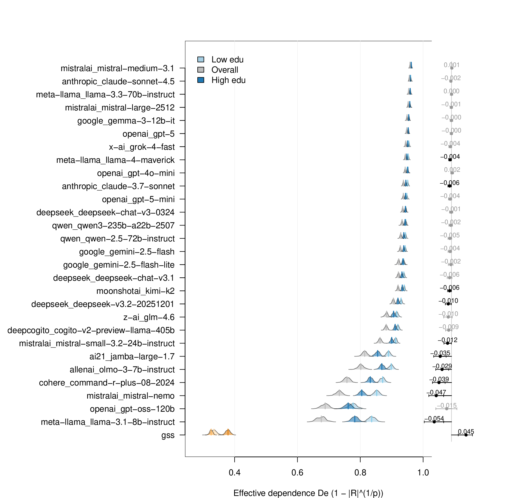
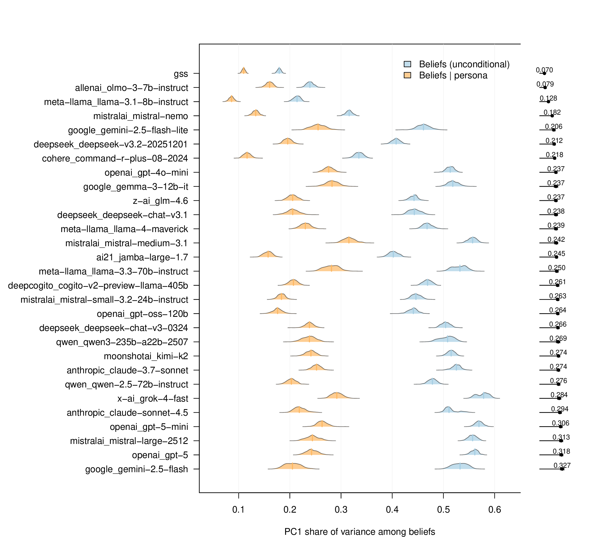
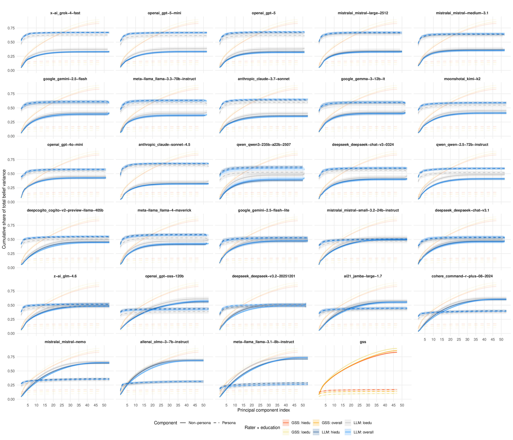
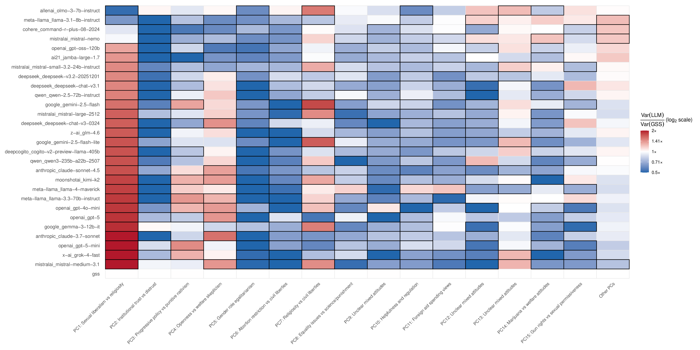

New York University
University of Amsterdam
2026-03-05
This talk in four parts:
Core claim: Silicon samples can match response marginals yet systematically distort the geometry of belief systems.
LLMs are increasingly used as synthetic survey respondents to:
Standard workflow: condition the model on a demographic persona → ask survey items → repeat over many personas
SYSTEM
You are answering as the following person living in the United States:
PERSONA
Age: 45 | Sex: Female | Race: White | Marital status: Married
Education: Bachelor's degree | Family income: $75,000–$99,999
Party ID: Republican (strong) | Ideology: Conservative
Religion: Protestant | Attendance: Weekly
ITEM
"We are faced with many problems in this country, none of which can
be solved easily or inexpensively. Are we spending too much, too
little, or about the right amount on national defense?"
OPTIONS: 1. Too much 2. About right 3. Too little
INSTRUCTION
Return only the number of the chosen option.What current evaluations check:
(Santurkar et al. 2023; Wang, Morgenstern, and Dickerson 2025; Bisbee et al. 2024)
What they miss:
A model can match marginals yet produce unrealistically coherent belief systems — collapsing the messy, cross-cutting structure of real public opinion.
A central finding in political behavior and cultural sociology:
Implication for synthetic data: Representing a public requires preserving the relationships among beliefs, not just response distributions.
Benchmark: 2024 General Social Survey (GSS) — 1,000 U.S. adult respondents (NORC at the University of Chicago 2024)
Synthetic personas: 28 LLMs queried via OpenRouter API
Three diagnostics:
| Diagnostic | Quantity | What it measures |
|---|---|---|
| Constraint | \(\text{PVE}_1 = \lambda_1/p\) | Dominant-axis concentration |
| Constraint | \(D_e = 1 - |\mathbf{R}|^{1/p}\) | Global linear dependence (Peña and Rodrı́guez 2003) |
| Missing structure | Rayleigh ratio | Dimension-specific variance deficit |
Uncertainty propagated via bootstrap resampling + multiple imputation (MICE, \(B=500\) bootstraps, \(m=30\) imputations).

Each facet = a quantile of \(|\rho_{j\ell}|\). Tighter ellipses = stronger dependence.
GSS in bold black; colored contours highlight LLMs exceeding the GSS by \(\Delta \geq 0.10\) at that quantile.
For each pair of attitude items, compute \(|\rho_{jl}|\). With 52 items that is \(52 \times 51/2 = 1{,}326\) pairs. Each panel shows one quantile of that distribution.
Tight example (LLM-like):
| Person | Abortion | Gun control | Defense |
|---|---|---|---|
| 1 | 5 | 5 | 1 |
| 2 | 4 | 4 | 2 |
| 3 | 3 | 3 | 3 |
| 4 | 2 | 2 | 4 |
| 5 | 1 | 1 | 5 |
Pairwise \(|\rho|\): {1.0, 1.0, 1.0} → Q95 = 1.0 → thin tilted ellipse
Loose example (GSS-like):
Pairwise \(|\rho|\): {0.45, 0.12, 0.30} → Q95 = 0.45 → wide, nearly circular ellipse
Reading the panels:

Bootstrap distributions of \(\text{PVE}_1 = \lambda_1/p\) (dominant-axis variance share), stratified by education.
Lollipops show education gradient \(\Delta\); dark = 95% CI excludes zero.
LLMs consistently over-concentrate variance on the leading axis.
\(\text{PVE}_1 = \lambda_1 / p\), where \(\lambda_1\) is the largest eigenvalue of the inter-item correlation matrix R and \(p\) is the number of items.
Example: 5 respondents, 3 items
\[\mathbf{R} = \begin{bmatrix} 1.0 & 0.8 & 0.1 \\ 0.8 & 1.0 & 0.2 \\ 0.1 & 0.2 & 1.0 \end{bmatrix}\]
Eigenvalues: \(\lambda = \{1.95,\; 0.72,\; 0.33\}\) (always sum to \(p = 3\))
\[\text{PVE}_1 = \frac{1.95}{3} = \mathbf{0.65}\]
Benchmarks:
| Scenario | PVE₁ | Meaning |
|---|---|---|
| All independent | 0.33 | No dominant axis |
| Typical GSS | ~0.15 | Weakly structured |
| Typical LLM | ~0.45 | Strongly concentrated |
| Perfect unity | 1.0 | One axis explains all |
Education gradient: In the GSS, high-education respondents show PVE₁ ≈ 0.22 vs. low-education ≈ 0.15 — a known finding. Most LLMs compress this gradient to near zero.

Bootstrap distributions of \(D_e = 1 - |\mathbf{R}|^{1/p}\) (global linear dependence), stratified by education.
LLMs substantially exceed the human benchmark; the education gradient is muted for most models.
Formula: \(D_e = 1 - |\mathbf{R}|^{1/p}\)
\(|\mathbf{R}|\) = determinant of the correlation matrix. Ranges from 0 (perfect collinearity) to 1 (perfect independence).
Strong correlation (\(\rho = 0.9\), 2 items):
\[\mathbf{R} = \begin{bmatrix} 1.0 & 0.9 \\ 0.9 & 1.0 \end{bmatrix}, \quad |\mathbf{R}| = 1 - 0.81 = 0.19\]
\[D_e = 1 - 0.19^{0.5} = \mathbf{0.56}\]
Weak correlation (\(\rho = 0.2\)): \(|\mathbf{R}| = 0.96 \;\Rightarrow\; D_e = \mathbf{0.02}\)
Why use \(D_e\) alongside PVE₁?
A model can have moderate PVE₁ but still show \(D_e \approx 1\) if secondary axes are also over-correlated.
In practice:
| Source | \(D_e\) |
|---|---|
| GSS | ~0.35 |
| Most LLMs | ~0.75–0.95 |
| Perfect dependence | 1.0 |
Finding 1: Persona-conditioned LLM belief systems are systematically over-constrained relative to humans:

\(\text{PVE}_1\) on the unconditional belief block \(\mathbf{R}_{\mathcal{BB}}\) vs. the persona-conditional residual \(\mathbf{R}_{\mathcal{B}|\mathcal{P}}\).
Lollipops show reduction \(\Delta\text{PVE}_1\). Conditioning removes a far larger share of constraint in LLMs than in the GSS.
Question: Does belief coherence survive once demographic variables are removed?
Step 1 — raw PVE₁ (blue): Run PCA on the full belief block → \(\text{PVE}_1^{\text{raw}}\)
Step 2 — residualise: For each item, regress on all persona variables (party ID, education, income, …); keep residuals.
Step 3 — conditional PVE₁ (orange): Run PCA on residual block → \(\text{PVE}_1^{\text{cond}}\)
Example: Party ID strongly predicts Abortion views. Raw corr(Abortion, Gun) = 0.72 → residual corr = 0.18
What the drop tells you:
| Source | \(\text{PVE}_1^{\text{raw}}\) | \(\text{PVE}_1^{\text{cond}}\) | \(\Delta\) |
|---|---|---|---|
| Typical LLM | 0.52 | 0.21 | 0.31 |
| GSS | 0.17 | 0.13 | 0.04 |
In the GSS, beliefs have structure beyond what demographics predict — people’s own views, not just their party card.
In LLMs, removing persona demographics strips away most apparent belief coherence. The model was largely performing a demographic prior.

Cumulative belief variance decomposed into persona-mediated and residual components along successive PCs.
In the GSS, residual (non-persona) structure dominates. In LLMs, the persona-mediated component accumulates rapidly.
Along each successive PC, decompose variance into the share explained by persona variables vs. the share that is genuinely residual.
For each PC \(j\): regress PC scores on persona variables → \(R^2_j\)
Example (3 PCs):
| PC | \(\lambda\) | \(R^2\) | Persona | Residual |
|---|---|---|---|---|
| 1 | 1.8 | 0.85 | 1.53 | 0.27 |
| 2 | 0.8 | 0.10 | 0.08 | 0.72 |
| 3 | 0.4 | 0.05 | 0.02 | 0.38 |
Read the figure:
GSS: Solid line rises steadily → real secondary belief dimensions continue to accumulate
LLMs: Dashed line saturates by PC3–5; solid line barely grows thereafter
If demographics alone can explain belief structure, the model is stereotyping — not simulating a person.
Finding 2: Demographic persona traits do disproportionately more organizational work in LLMs than in humans:

\(\text{RR}_{m,j} = v_{m,j} / \lambda_j\). White = 1×; blue < 1× (under-realized); red > 1× (over-realized). Black outlines: 95% CI excludes 1. Models ordered by over-realization of GSS PC1.
Formula: \(\text{RR}_{m,j} = v_{m,j} / \lambda_j\)
Use GSS eigenvectors as a reference frame. Ask: how much variance does the LLM place on each human dimension?
GSS PC1 = “Sexual liberalism vs. religiosity” Loadings: \(\mathbf{v}_1 = [0.71,\; 0.71]\); eigenvalue \(\lambda_1 = 1.4\)
Project 5 LLM respondents onto \(\mathbf{v}_1\):
| Person | Abortion | Church | Score |
|---|---|---|---|
| 1 | 5 | 5 | 7.1 |
| 2 | 5 | 4 | 6.4 |
| 3 | 4 | 5 | 6.4 |
| 4 | 1 | 1 | 1.4 |
| 5 | 2 | 2 | 2.8 |
\(\text{Var} = 5.7 \;\Rightarrow\; \text{RR} = 5.7 / 1.4 = \mathbf{4.1}\) → deep red
Same model on GSS PC5 (a weaker domain-specific axis, \(\lambda_5 = 0.6\)):
LLM variance projected onto \(\mathbf{v}_5 = 0.2\)
\(\text{RR} = 0.2 / 0.6 = \mathbf{0.33}\) → deep blue
Reading the heatmap:
| Colour | RR | Meaning |
|---|---|---|
| Deep red | > 1 | LLM over-realizes this dimension |
| White | = 1 | Matches human benchmark |
| Deep blue | < 1 | LLM under-realizes this dimension |
| Black outline | 95% CI excludes 1 |
Not “too much ideology” — the wrong kind: PC1 inflated, PC2–15 erased.
Finding 3: LLMs do not merely produce “too much ideology” — they produce the wrong kind:
Cohen’s κ (weighted):
The trap:
First-order accuracy checks (marginals, κ) are incomplete diagnostics for structural realism.
Over-constraint — LLM belief systems are too coherent; pairwise correlations inflated, variance over-concentrated on PC1
Persona mediation — Demographics carry too much structural weight in silicon samples; residual belief structure is disproportionately small
Missing secondary structure — LLMs amplify the leading human dimension while compressing the weaker cross-cutting axes that define real mass opinion
Matching marginals is not enough.
Synthetic surveys should be evaluated against a structural realism standard:
When silicon samples can mislead:
Minimum auditing checklist:
Christopher Barrie Department of Sociology New York University christopher.barrie@nyu.edu
Roberto Cerina ILLC, University of Amsterdam
Preprint: osf.io/preprints/socarxiv/n7fq8_v1
Questions welcome.